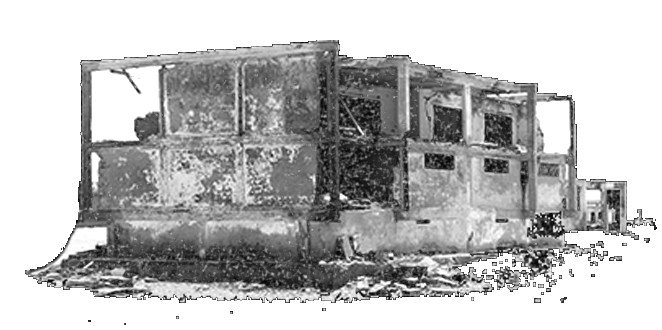

Heba Amin is an Egyptian artist currently teaching at Bard College Berlin. Amin is the co-founder of the Black Athena Collective, the curator of visual art for the MIZNA journal, and curator for the biennial residency program DEFAULT with Ramdom Association. Her work addresses politics, technology, and urbanism through various media.
